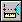
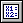
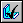
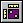
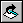
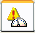
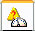

Sensors
When constructing parts and assemblies, you often need to keep track of critical design
parameters. For example, when designing a shield or shroud that encloses a rotating
part, you must maintain enough clearance for maintenance and operational purposes.
You can use the Sensors tab  on PathFinder to define and keep track of design parameters for your parts and assemblies.
on PathFinder to define and keep track of design parameters for your parts and assemblies.
You can define the following types of sensors:
-
Minimum distance sensors
-
General variable sensors
-
Sheet metal sensors
-
Surface area sensors
-
Custom sensors
Creating a sensor
Although there are several types of sensors, you follow the same basic steps when creating any sensor:
-
From the Sensors tab on PathFinder, select the sensor type you want.
-
Define what you want to track in the design.
-
Define the operating limits for the sensor.
Every sensor you define in the document is displayed and managed on the Sensors tab on PathFinder.

Minimum distance sensorsMinimum distance sensors are used to track the minimum distance between any two elements. For example, you can track the minimum distance between two part faces in an assembly. You define a minimum distance sensor similar to how you measure the minimum distance between two elements with the Minimum Distance command.
When you click the Minimum Distance Sensor button on the Sensors tab, the Minimum Distance command bar is displayed so you can select the two elements you want to measure between. After you select the two measurement elements, the Measure Distance box displays the current minimum distance value. When you click the Close button on the command bar, the Minimum Distance Sensor Parameters dialog box is displayed so you can define the sensor parameters you want, such as the sensor name, display type, threshold value, sensor range, and so forth. When you click OK, the new sensor is displayed on the Sensors tab.

General variable sensorsYou can use a general variable sensor to track variables, such as driving and driven dimensions. To create a general variable sensor, select the Variable Sensor button on the Sensors tab, then select the variable you want in the variable table. When you click the Add Variable button on the Variable Sensor Parameters dialog box, the variable value is added to the Current Value box. You can then define the remaining sensor parameters.

Sheet metal sensorsYou can use sheet metal sensors to track design parameters, such as the minimum distance between particular types of sheet metal features and part edges. You can create your own sheet metal sensors from scratch, or you can select from a list of predefined examples.
Sheet metal sensors are available only in sheet metal documents.
To create a sheet metal sensor, select the Sheet Metal Sensor button on the Sensors tab, then use the Sheet Metal Sensor command bar to define the faces and edge sets you want to track. When you click the Finish button, the Sheet Metal Sensor Parameters dialog box displays so you can define the remaining sensor parameters.

Surface area sensorsYou can use a surface area sensor to monitor a surface or a set of surfaces. You can monitor both positive and negative surface area. A negative surface area sensor monitors the "holes" or internal boundaries in a surface. For example, you may need to track the total area for a series of ventilation holes and cutouts in a surface.
The Surface Area Sensor command bar is where you define the faces you want to track as a sensor. When you click the Accept (checkmark) button on the command bar, the Surface Area Sensor Parameters dialog box displays so you can define the remaining sensor parameters. This sensor type is available only for Part and Sheet Metal documents.

Custom sensorsYou can use a custom sensor to monitor any numeric result that is calculated from a custom program. For example, you could create a custom program that assigns a manufacturing cost to each feature type used for creating sheet metal parts. The program would then monitor the part features and give you the part cost of the completed model.
When you click the Custom Sensor button, it displays the Custom Sensor DLL dialog box so you can define the DLL and user function you want. After you define the DLL and user function, and click OK, the Custom Sensor Parameters dialog box displays so you can define the sensor parameters.
For more in-depth information on how to use custom sensors, see the readme.doc file delivered to the Solid Edge\Custom\CustomSensor folder.
Sensor alarms
When a change to the model exceeds the defined sensor threshold limit, the Sensors tab displays a special notification symbol and a sensor violation alarm is displayed in the upper-right corner of the graphic window.
- Violation alarms
-
On the Sensors tab:

In the graphics window:

When one of the elements a sensor tracks is deleted, a warning notification symbol is displayed to call attention to it.
- Warning alarms
-
On the Sensors tab:

In the graphics window:

When you see an alarm symbol in the upper-right corner of the graphics window, you can click it to respond to the alarm. This displays the Sensor Assistant, which contains hyperlinks to all the sensor violations and warnings in the document.
You can activate or deactivate the Sensor Assistant and alarm notification in the graphics window using the Show Sensor Indicator option on the Helpers page of the Solid Edge Options dialog box. This does not affect the operation of the sensors themselves.
To learn how to use the Sensor Assistant, see Responding to sensor alarms.
How do I
Create a custom sensorCreate a minimum distance sensor
Responding to sensor alarms
Create a sheet metal sensor
Create a surface area sensor
Create a variable sensor
Look up more details
Sensor AssistantMinimum Distance Sensor Parameters dialog box
Sensors tab
Sheet Metal Sensor command bar
Sheet Metal Sensor Parameters dialog box
Surface Area Sensor command bar
Surface Area Sensor dialog box
Variable Sensor Parameters dialog box
Custom Sensor Parameters dialog box
Custom Sensor DLL Dialog Box